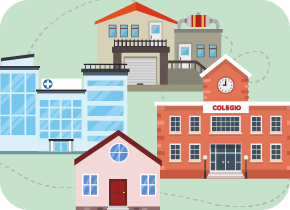
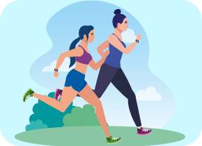
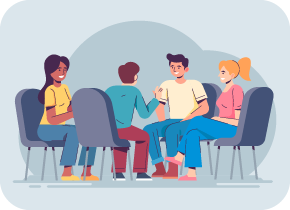

Asesorías a instituciones u organizaciones
Es una estrategia del Programa Nacional HEVS, la cual proporciona herramientas a lideres de instituciones u organizaciones en diversos ámbitos para promover estilos de vida saludables mediante iniciativas autosostenibles.
Enfoques
Las acciones que se implementan durante una asesoría incluyen intervenciones basadas en la evidencia, estas son:
Enfoque campañas e información.
Enfoque social y comportamental.

Ámbitos
Son escenarios o entornos donde se desarrollan las intervenciones.
Educativo, Laboral, Salud y Comunitario.

Nota importante
En los ámbitos laboral, de salud y comunitario, el número de participantes que conforman la institución u organización debe ser mínimo de 10 personas. En el ámbito educativo debe ser mínimo de 20 personas.
Tiempo de ejecución
Dos mesesLa estrategia se desarrolla desde el paso 1 al 6 de la Ruta Metodológica, en un tiempo máximo de dos meses, seguidos por un mes para medir con el grupo de apoyo los resultados (paso 7).
Siete pasos
Ruta MetodológicaHerramienta que indica el proceso metodológico de la intervención en la institución u organización, la cual está compuesta por siete pasos.

Paso 1
Identificación y selección de instituciones u organizacionesHacer mapeo de instituciones u organizaciones de los diferentes ámbitos diligenciando el formato base, con el fin de definir cuáles serían las instituciones a intervenir.
Paso 2
Acercamiento al tomador de decisionesPonerse en contacto con el tomador de decisiones a través de la presentación de una carta de intención, con el fin de socializar la estrategia y definir el inicio de la intervención.
Paso 3
Grupo apoyo (GA)Es un grupo pequeño (máximo seis personas), compuesto por diferentes actores de la institución u organización.
Se realiza la socialización de la propuesta, la caracterización de la IUO y la elaboración del plan de trabajo: cronograma para el desarrollo de la ruta metodológica y modelo lógico.

Paso 4
Desarrollo de las accionesEstá determinado por tres acciones:
1. Capacitación.
2. Estrategias IEC-Información, Educación y Comunicación.
3.Evento de Movilización.
Capacitación
Es un procedimiento planeado para facilitar herramientas al grupo de apoyo sobre lineamientos del Programa HEVS.
Se busca generar actitudes y habilidades para que, en condición de líderes, sean modelos dinamizadores de cambios conductuales.

Nota importante
Las capacitaciones tienen como ejes temáticos la promoción de actividad física y reducción de comportamientos sedentarios, la alimentación saludable y la protección de espacios 100% libres de humo de tabaco. Sin embargo, el objetivo principal es la actividad física y reducción de comportamientos sedentarios.
Estrategias IEC
Es una herramienta motivadora que, de manera integral y simultánea, permite sensibilizar, educar, motivar e informar acerca de un tema determinado, a través de diversos canales de comunicación.
Busca promover, por medio de la tecnología, la comunicación y procesos de socialización, cambios de comportamiento o actitudes en una población específica.

Nota Importante
Algunos ejemplos son: composiciones musicales, guías, cuentos cortos, historietas, folletos, brochures, publicaciones periódicas, adivinanzas, retos mentales, videos, infografías, mensajes a través de redes sociales y medios de comunicación como radio y televisión. Juegos de palabras, jingles, títeres, recordatorios de pausas activas, entre otros.
Evento de movilización
Es una actividad que busca integrar a los diferentes actores de la institución u organización, requiriendo la articulación de esfuerzos logísticos y de convocatoria para realizarlos. Para el evento de movilización la actividad central es la actividad física dirigida.
Nota importante
El grupo de apoyo y el personal HEVS deben garantizar la planeación de la acción, teniendo en cuenta requerimientos logísticos, características, cantidad de participantes y espacios disponibles. Los lideres de la estrategia deben asegurar una convocatoria y participación de mínimo el 60% de la cantidad total de integrantes de la institución.
Paso 5
EvaluaciónCumplimiento de objetivos y acciones planificadas, midiendo conocimientos adquiridos y experiencias implementadas en promoción de hábitos saludables. El proceso es dirigido por el líder de la estrategia con ayuda del grupo de apoyo de la Institución u Organización.

Paso 6
RealimentaciónEste paso se puede realizar durante el proceso de la asesoría a partir de las acciones desarrolladas por el grupo de apoyo, en donde se evidencie la necesidad de cambiar o modificar algunas de ellas, con el fin de optimizar el desarrollo de la estrategia.
Paso 7
ResultadosUna vez finalizada la totalidad de las actividades definidas en el cronograma, y establecidas en el Modelo Lógico, como resultados a corto plazo y con base a los ajustes sugeridos en la realimentación, el personal HEVS y el Grupo de Apoyo presentarán los resultados al tomador de decisión.